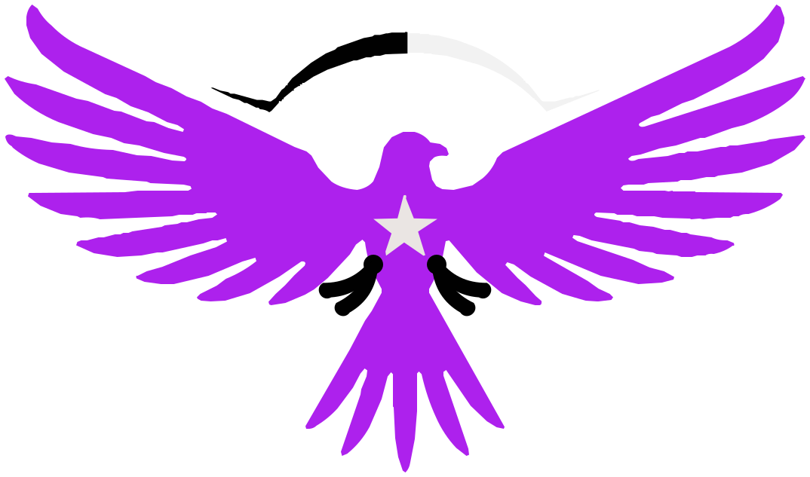

Modelos 3D: Poly Haven (CC0) · megáfono de Ethan Simon-Law, cámara de James Ray Cock y Jenelle van Heerden, termo de PierreB3D y caja de Rahul Chaudhary.
Música: «Volatile Reaction», Kevin MacLeod (incompetech.com), CC BY 4.0.
Letra: Space Grotesk, SIL Open Font License.